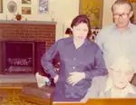
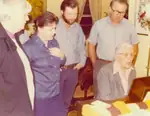

Home / Krehbiels / 031 Krehbiel Roll 1977-10 Aunt Emma
031 Krehbiel Roll 1977-10 Aunt Emma
PIctures from Great Aunt Emma's visit to Bob and Gerry's house in Centreville.
← Return to Krehbiels
kre031-00001
Great Aunt Emma (Boss) Krehbiel at piano, Gerry Krehbiel in foreground. Centreville, 1977. Updated: 17 Feb 2008

kre031-00002
Left to right: Gerry (Renshaw) Krehbiel, Bob Krehbiel, Great Aunt Emma (Boss) Krehbiel at piano. Centreville, 1977. Updated: 17 Feb 2008

kre031-00003
Left to right: Jean Krehbiel, Gerry (Renshaw) Krehbiel, Mike Krehbiel, Bob Krehbiel, and Great Aunt Emma (Krehbiel) Boss (at piano). Centreville, 1977. Updated: 17 Feb 2008
3 photos available in this directory.
Copyright © 2005–2026 Thomas Krehbiel. Images are freely distributable for personal use. For more information about these images contact Thomas Krehbiel (tkrehbiel@gmail.com).
Photos were scanned at either 300dpi or 600dpi, depending on the quality of the photograph. Slides were scanned at 1800dpi. Documents were scanned at 100dpi or 150dpi. Photoshop enhancements: most images have had their contrast improved. Some color photos were corrected to restore color balance. Some blurry images were mildly sharpened. Occasionally dust, scratches, and blemishes were removed digitally.